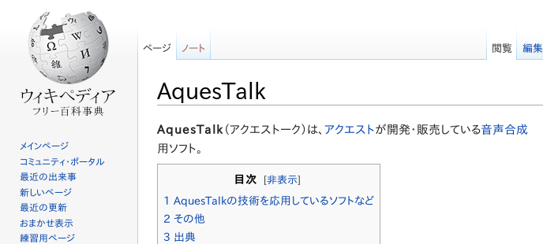

かならずお読みください →

しゃべる文字盤のつくりかた
TIPS_5 合成音声でしゃべる方法

声が不自由でもコミュニケーションが自由な人もいます。
声が自由でもコミュニケーションが不自由な人もいます。
声がなければコミュニケーションできないわけではありません。
しかし、声で話す行為はコミュニケーションと関連が深く、ある種人間らしさの象徴とか、特別な価値をもつとみなされることがあります。 そのため声が不自由になってひどく力をおとされる人がいたり、合成音声またはご本人の元気な頃の声を機械から再生する試みに取り組まれ、その結果にお喜びになる方々もおられます。これらを考えるとコミュニケーションとは意思を伝えるという機能や目的だけでなく、そのあり方や過程や手段にも多くの関心が集まるものであるようです。このため、コミュニケーションエイドが使えるようになったらそれでＯＫとはいかないこともあります。
以前お付き合いさせていただいた男性患者さんは、伝の心で女性の声を出してご家族を笑わせていました。 今にして思えばこのかたが回復しようとしたのは、コミュニケーションのその先の家族関係だったように思います。 このように道具も大事ですが、それを使って何に取り組むか、そして人間や生活がどう変わるかも重要なのだと考えざるをえません。
合成音声による発話には好き嫌いがわかれます。しかし少なくとも、視力の事情で文字が読みにくい場合の補助手段として、小児などの関心を引く演出のため、少し離れた人に伝える等の目的のため、コミュニケーションエイドにはなにはともあれ備えるべき機能と考えています。そして、しゃべる文字盤では使う人の負担を軽くするため無料で利用できる合成音声を使っています。
このページでは、しゃべる文字盤で、合成音声を利用してしゃべっている方法について説明します。
開発の経緯
しゃべる文字盤の開発を始めたばかりの2008年ごろは、単純に目の前の人に聞こえるように『声が出る文字盤』をつくろうとしていましたので、VBA（マクロ）の利用も考えず、Windowsの基本機能を利用していました。
具体的には、エクセルのセルに表示した文字列や画像から声を録音したwavファイルへハイパーリンクを設定し、これをクリックすると音声が再生されるという大変シンプルで簡単な方法です。 そのため表示物と再生する音声ファイルが準備できると色々変わったものが作れます。
例えば大量生産に馴染みにくい少数言語のコミュニケーションエイドとか、シンボルや家族の写真などつかったVOCAなどのツールなども作れるでしょう。これついては早くから試みがあるのですが、その後あまり発展していないのは残念です。しかしこの声を録音して利用する方法には課題がいくつかあります。 まず声の品質が『声の主』に依存します。話すことはそれほど難しくありませんが、上手に聞き取りやすく話すのは簡単ではありません。つぎに準備作業に手間がかかります。録音と編集などパソコンで出来ますがそれなりの準備とスキルが求められます。
また50音の音声を並べただけでは満足いく品質の話し言葉になるわけでもありません。 フレーズごとに並べればいくらかましになるようですが、これも数が多くなると大変でしょう。 いずれにせよ使い続けるためにはメンテナンスや将来の拡張性などにも配慮が必要です。これらの問題が徐々にわかって来ましたので、オーソドックスな日本語合成音声の検討を行いました。
この頃（2009年頃）の代表的な合成音声といえば、マイクロソフトの合成音声（Microsoft Speech Platform）でした。さっそく試してみましたが、英語はまだしも日本語の声の品質が悪くて（初めて聞いたときはパソコンが壊れたのかと思いました）断念しました。この問題もその後ずいぶん改善されたそうです。しゃべる文字盤は、自由にコピーして無料で誰でも使えることを目標にしています。このため、合成音声も同様に無料でコピー自由なものが必要と考え探しました。（パソコンの世界ではこのようなことは珍しくありません。これらは一般にフリーウエアと呼ばれています。）
その結果、非営利で自由に使え、また音声の品質や取り扱いしやすさなどから、AquesTalk（AQUEST社）を使うことになりました。
合成音声の特徴をまとめると次のようになります。
１ 合成音声は音の高さ、声の大きさ、読みの速さなど均質な発声が可能で、微調整も可能です。しかし抑揚や感情の少ない無機質な人間らしくない声になりがちです。しかしこれは手書き文字に対する活字に相当する特徴と考えられます。味わいも感情も乏しいですが読みやすさや聞きやすさにつながる可能性があります。
２ 長時間や繰り返し読み上げなど人での対応が困難な用途で特徴を発揮します。夏目漱石の猫など休みなくよどみなく淡々と長時間読み続けます。また繰り返し読み上げもできますので、聞き取りにくい場合でも気兼ねなく使えます。
３ 男声、女声など種類は多くありませんが多少選択できます。
４ アニメ的声は特に小児むけ用途で関心を引きやすく、また感情やニュアンスが混じった会話が苦手な人などの用途で効果が期待できると考えられています。
AquesTalkをエクセルVBAで利用するに際して、開発者の山崎さんのブログを参考にさせて頂きました。
AquesTalkには同期発声と非同期発声がありますが、コミュニケーションエイドでは同期発声のみで足りると思います。
Option Explicit Private Declare Function AquesTalkDa_PlaySync Lib "AquesTalkDa.dll" (ByVal koe As String, ByVal iSpeed As Integer) As Long Sub AQTalksync(strVoice2 As String) '発声サブルーチン 同期 Dim r As Integer Dim SSpeak As Long SSpeak = Worksheets("OPTION").Range("A7").Value '"OPTION"シートのA7セルの発話速度を読み出す r = AquesTalkDa_PlaySync(strVoice2, SSpeak) If r <> 0 Then MsgBox "同期発声エラー番号" & r, , "AquesTalkエラー" End Sub2行 AquesTalkDa_PlaySync（AquesTalk同期型）の宣言文です。
4行 発声部分をひとつのSUBの形にしています。文字型変数strVoice2が発声する言葉の音声記号です。
8行 ExcelのOPTIONワークシートから発声速度の設定を読み込みます。
10行 実行部分です。DLLに発音記号と速度を渡します。
12行 エラーが発生した際にメッセージボックスを表示する部分です。
しゃべる文字盤では上記のSubを、AquesTalkという名称の標準モジュールとして設定しました。 どこからでも、CallAQTalksync（"ことば"）で発声できます。発音記号について
発声のためのテキストデータ（発音記号）作成マニュアルも公開されています。しかし厳密に作ってもアクセントの違和感が完全になくすのは簡単ではありません。具体的な方法としてAquesｔ社が公開している発声サンプルソフトを使って、まずひらがなの羅列で発声させ、違和感が強い部分を記号を追加して少々手直しする程度でやめておくのが実用的と思います。美しい発音をとことん追求するには大変な苦労が必要です。ご存知のように、スペインでは雨はおもに広野に降ります。
また、実際やてみると個性的な声ではアクセントの違和感も気になりにくく、かえって愛嬌のあるコミカルな面白みも出てくるようです。細かなアクセントよりも歯切れの良さやテンポの良さ、聞き取りやすさも大事にするべきと思います。
おわりに
いまどきの家電量販店の売り場は大変にぎやかです。
炊飯器も給湯器もあれもこれもにぎやかにおしゃべりしています。
『ごはんがたけました』『おふろがわきました』
我が家の家電製品は皆無口ですが、ここはまるで別世界のようです。合成音声はすでにありふれた珍しくもなんともないものになっています。 それどころか自由に使って自由にお話しさせることがもうすでに可能になっています。
みなさんの身の回りのそんなニーズはありませんか？ そのアイデアはもしかしたら意外に少ない出費で実現できるかもしれません。
この記事がそのような取り組みの参考になれば幸いです。
2014/7/31 公開研究企画課リハ工学科にもどる